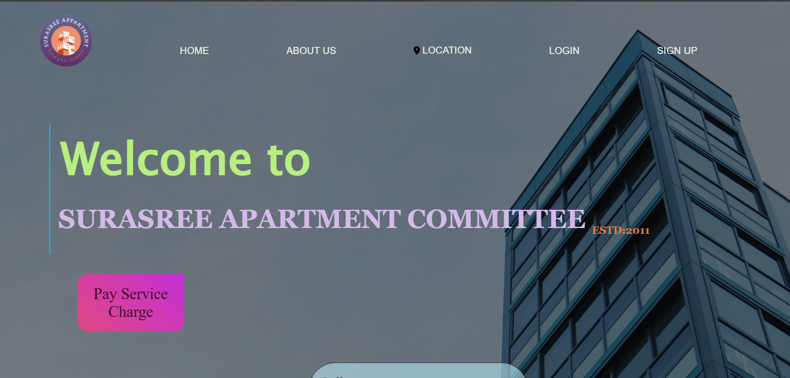
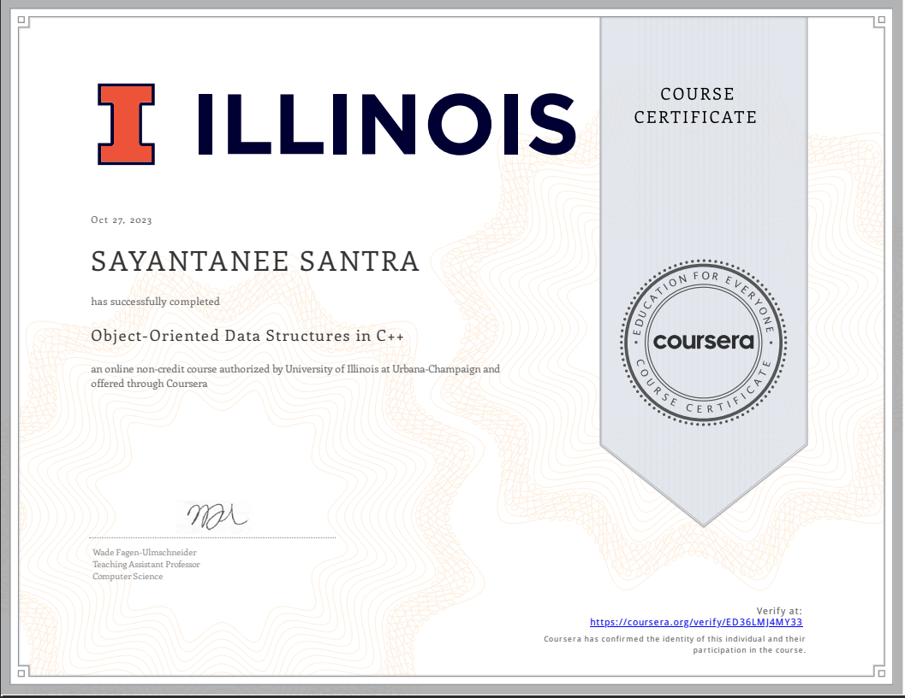
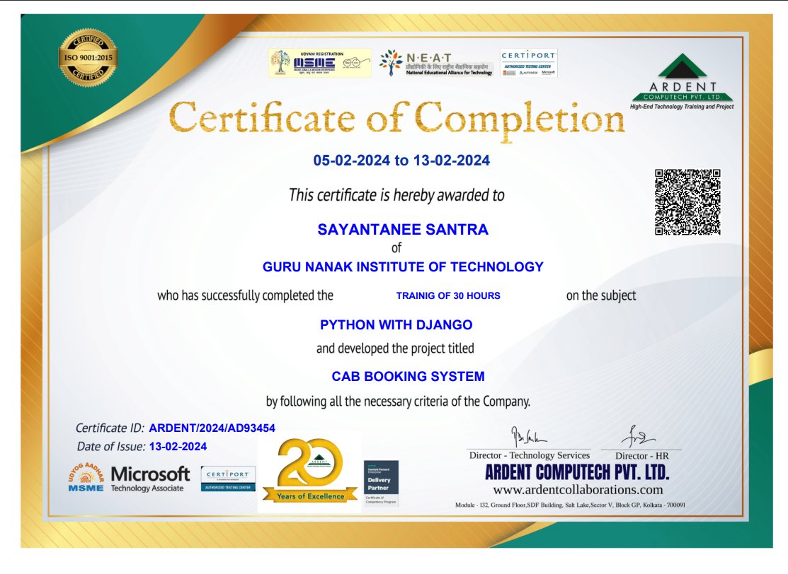
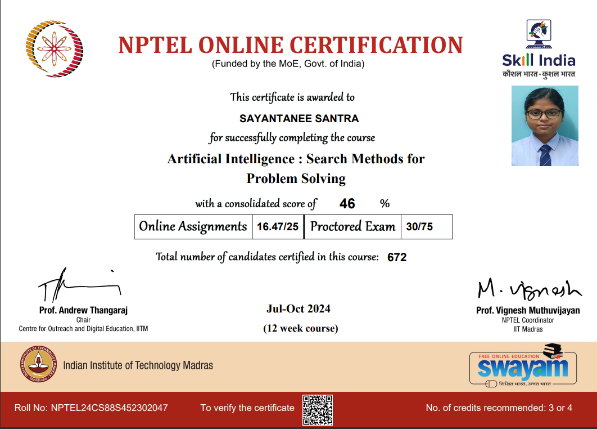

Web Development
HTML, CSS and JavaScript for responsive interfaces and interactive experiences.
Open to software engineering opportunities
Computer Science & Engineering graduate focused on web development, Java, databases and machine learning. I enjoy turning ideas into clean, useful software.
const developer = {
};
▌
Profile
Curious, practical and focused on building a strong software engineering foundation.
Hello there!!
I'm Sayantanee Santra, a final year student of BTECH in Computer Science & Engineering from Guru Nanak Institute of Technology. As someone passionate about developing and exploring new technologies, I'm eager to kick-start my career and make meaningful contributions to the IT industry.
Throughout my academic journey, I have developed a solid foundation in Website Development and also in Machine Learning & AI. I thrive on problem-solving, collaborating in teams, and constantly learning new things. My projects have allowed me to apply these skills in real-world scenarios, and I'm excited to build on this experience as I move forward in my career.
I am eager to take on new challenges and continuously improve myself in Artificial Intelligence & Machine Learning, and I believe my creativity, determination, and fresh perspective can bring value to any team I join.
DSA foundation with a practical, project-led learning approach.
Experience across responsive web interfaces and Java desktop applications.
Academic project work in image captioning using hybrid CNN models.
Toolkit
A focused toolkit built through coursework, projects and hands-on development.
HTML, CSS and JavaScript for responsive interfaces and interactive experiences.
Object-oriented programming and Java Swing desktop application development.
Relational database fundamentals with MySQL and application integration.
Python-based academic work in deep learning and image caption generation.
Problem solving, Git, exception handling and structured application development.

Project exposure across frontend development and modern web application concepts.
Experience
Hands-on exposure to software development and steel production automation.
Primetals Technologies
Internship work on a Level 2 Steel Automation project focused on enhancing production data tracking and process visibility in a steel plant environment.
Asian Institute of Technology - Thailand
Participated in the AIT Global Innovation Program, gaining practical exposure to AI, Machine Learning, LLMs, prompt engineering, and medical robotics. As part of the innovation challenge, our team developed a concept for a patient monitoring system aimed at tracking the daily health conditions of cancer survivors after radiation therapy, with the goal of identifying early warning signs and supporting preventive care for leukemia-related risks.
Norlox Solutions
Working as US IT recruiter executive. Hiring the potential candidate for client's project.
Selected Work
Academic and personal projects covering web development, Java applications and machine learning.

01Management System
A website concept for managing apartment service charges, with flat account information managed through a linked Excel database.
Java + MySQL
Java Swing application integrated with MySQL for managing steel production records, with filters for date, shift, strand and heat number, plus interactive slab details.
Machine Learning
Academic machine learning project exploring image caption generation with CNN-based feature extraction and a sequence-generation approach.
Machine Learning
Built a Python-based system that predicts a suitable job role from an uploaded resume's skill set using NLP.
MERN Stack
Developed a full-stack system using MongoDB, Express.js, React.js, and Node.js to manage patients, doctors, and appointments.
E-Learning Site Development
Built a full-stack e-learning platform featuring user authentication, course catalogue filtering, and secure checkout. Integrated video lesson streaming and real-time student progress tracking. Optimized backend database queries and implemented responsive UI designs for mobile and desktop views.
Academic Journey
A structured academic path in computer science with a strong technical foundation.
B.Tech
BTech in Computer Science and Engineering.
8.5 CGPA avgSchool Education
Higher Secondary Examination
80.60%School Education
Secondary Examination
85.42%Credentials
Selected certificate documents from the original portfolio.



Let's Connect
Use the form to get in touch or reach out directly through the contact details below.
I'm interested in opportunities where I can keep learning, collaborate with a team and contribute to real software products.
sayantaneesantra2003@gmail.com +91 9330909727 github.com/Sayantanee-2310